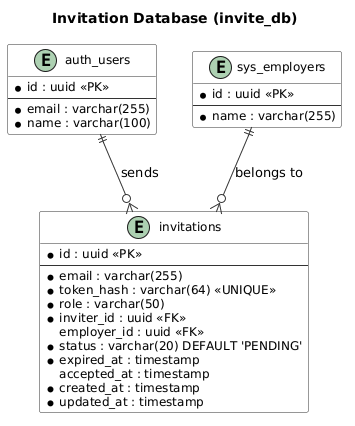

Database Design Document
Invitation Management Module
INVITE
1. Overview
1.1 Purpose
This document defines the database design for the Invitation Management module (database: invite_db).
1.2 Requirements Addressed
| SRS Requirement | Database Solution |
|---|
| FR-001 Send Invitation | invitations table |
| FR-002 Generate Token | invitations.token_hash column |
| FR-004 Verify Token | invitations table (token_hash lookup) |
| FR-005 Accept Invitation | invitations.status, invitations.accepted_at |
| FR-006 Revoke Invitation | invitations.status update |
| FR-007 List Invitations | invitations table with indexes |
| FR-008 Resend Invitation | invitations.token_hash, invitations.expired_at update |
1.3 ERD Diagram

Figure 1: Invitation Management ERD
2. Schema Design
2.1 Database Strategy
| Aspect | Decision |
|---|
| Database | invite_db |
| Table naming | invitations (single table for this module) |
| Primary keys | UUID (via gen_random_uuid()) |
| Timestamps | created_at, updated_at with NOW() default |
| Token storage | SHA-256 hash (raw token never stored) |
2.2 Table: invitations
| Column | Type | Nullable | Default | Description |
|---|
| id | uuid | NO | gen_random_uuid() | Primary key |
| email | varchar(255) | NO | - | Invitee email address |
| token_hash | varchar(64) | NO | - | SHA-256 hash of raw invitation token |
| role | varchar(50) | NO | - | Organization role: HR, Candidate, Employer |
| inviter_id | uuid | NO | - | FK to auth_users(id) - user who sent invitation |
| employer_id | uuid | YES | NULL | FK to sys_employers(id) - nullable for system-level invites |
| status | varchar(20) | NO | 'PENDING' | Invitation status |
| expired_at | timestamp | NO | - | Token expiry timestamp |
| accepted_at | timestamp | YES | NULL | Timestamp when invitation was accepted |
| created_at | timestamp | NO | NOW() | Creation time |
| updated_at | timestamp | NO | NOW() | Last update time |
CREATE TABLE invitations (
id UUID PRIMARY KEY DEFAULT gen_random_uuid(),
email VARCHAR(255) NOT NULL,
token_hash VARCHAR(64) NOT NULL,
role VARCHAR(50) NOT NULL,
inviter_id UUID NOT NULL REFERENCES auth_users(id),
employer_id UUID REFERENCES sys_employers(id),
status VARCHAR(20) NOT NULL DEFAULT 'PENDING',
expired_at TIMESTAMP NOT NULL,
accepted_at TIMESTAMP,
created_at TIMESTAMP NOT NULL DEFAULT NOW(),
updated_at TIMESTAMP NOT NULL DEFAULT NOW(),
CONSTRAINT invitations_status_check CHECK (status IN ('PENDING', 'ACCEPTED', 'EXPIRED', 'REVOKED')),
CONSTRAINT invitations_token_hash_unique UNIQUE (token_hash)
);
2.3 Status Enum Values
| Status | Description | Transitions |
|---|
PENDING | Invitation sent, awaiting acceptance | ACCEPTED, EXPIRED, REVOKED |
ACCEPTED | Invitation accepted by invitee | Terminal state |
EXPIRED | Token expired before acceptance | PENDING (via resend) |
REVOKED | Cancelled by inviter or admin | PENDING (via resend) |
2.4 Foreign Key Relationships
| Constraint | Column | References | On Delete |
|---|
| invitations_inviter_id_fk | inviter_id | auth_users(id) | CASCADE |
| invitations_employer_id_fk | employer_id | sys_employers(id) | SET NULL |
3. Indexes
-- invitations
CREATE INDEX invitations_email_idx ON invitations(email);
CREATE INDEX invitations_token_hash_idx ON invitations(token_hash);
CREATE INDEX invitations_status_idx ON invitations(status);
CREATE INDEX invitations_inviter_id_idx ON invitations(inviter_id);
CREATE INDEX invitations_employer_id_idx ON invitations(employer_id);
3.1 Index Descriptions
| Index Name | Column(s) | Purpose |
|---|
| invitations_email_idx | email | Lookup invitations by invitee email |
| invitations_token_hash_idx | token_hash | Token verification lookup (public endpoint) |
| invitations_status_idx | status | Filter invitations by status (PENDING, EXPIRED, etc.) |
| invitations_inviter_id_idx | inviter_id | List invitations sent by a specific user |
| invitations_employer_id_idx | employer_id | List invitations for a specific organization |
4. Migrations
4.1 Migration Strategy
| Aspect | Decision |
|---|
| Tool | Drizzle ORM (drizzle-kit) |
| Database | invite_db |
| Rollback | Required for every migration |
4.2 Migration Order
| Order | Migration | Description | Dependencies |
|---|
| 1 | 001_create_invitations | Create invitations table | auth_users, sys_employers (must exist first) |
| 2 | 002_create_indexes | Create all indexes | 001_create_invitations |
4.3 Migration Dependencies
| Module | Table | Required For |
|---|
| AUTH | auth_users | invitations.inviter_id FK |
| SYS | sys_employers | invitations.employer_id FK |
5. Data Dictionary
| Table | Description | Resolves | Est. Rows (Y1) |
|---|
| invitations | Organization invitations with token-based verification | FR-001, FR-004, FR-005, FR-006, FR-007 | 5,000 |
5.1 Estimated Data Volume
| Scenario | Estimated Volume (Y1) | Growth Rate |
|---|
| Total invitations sent | 5,000 | Monthly |
| PENDING invitations | 500 | Transient (7-day expiry) |
| ACCEPTED invitations | 3,500 | Cumulative |
| EXPIRED invitations | 1,000 | Cumulative |
| REVOKED invitations | 500 | Cumulative |
5.2 Token Strategy
| Aspect | Decision |
|---|
| Token format | Random 32-byte string (base64url encoded) |
| Storage | SHA-256 hash only (raw token never stored) |
| URL delivery | Raw token in query parameter: ?token={raw_token} |
| Expiry | 7 days (configurable via environment variable) |
| Uniqueness | UNIQUE constraint on token_hash column |